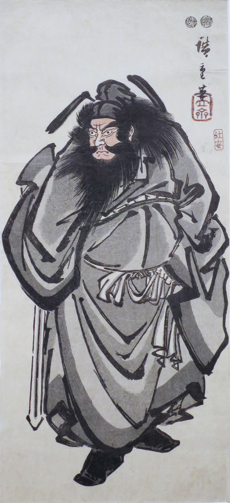

psychic attack / energy protection
邪気とサイキックアタック
職場の誰かの「気」にやられる。夜中に、何かに押さえつけられて動けない。「生霊を飛ばされている」と言われた。守るには、塩か、水晶か、お守りか。この分野で名前の知られた人は、かつて自分も守っていたと語ったうえで、「守る必要はない」と言っています。日本語の「生霊」の来歴と、「金縛り」について医学が言っていること、「思い込みで具合が悪くなる」ことの研究も。

職場のあの人のそばにいると、体が重くなる。人混みから帰ると、頭が痛い。夜中に目が覚めて、何かに押さえつけられて動けなかった。占いで「生霊を飛ばされています」と言われた。だから、塩をまき、水晶を持ち、お守りを買い、部屋にお香を焚く。それでも、また来る。
「邪気」「サイキックアタック」「生霊」「悪いエネルギー」。呼び方は違っても、悩みは同じです。何かが外から来て、自分を弱らせている。どうやって守ればいいのか。このページでは、この分野で名前の知られた人が——自分もかつては守っていた、と語ったうえで——それにどう答えているかを見ます。そのあとで、日本語の「生霊」の千年の来歴、「金縛り」について医学が言っていること、「思い込みで具合が悪くなる」ことの研究を、隣に置きます。
「守る必要はない」と、なぜ言うのか
この分野の教師、クリスティーナ・ロペス（理学療法の博士号と公衆衛生の修士号を持つ元臨床家）は、この話題について「少し物議をかもすかもしれない」と断って、こう始めています。「この分野の教師の大多数は、悪いエネルギーから身を守ることを強く勧めています。守り方の動画は山ほどある。私自身も、昔、一本か二本、作っています。でも、年月のなかで、私の意見と経験は大きく変わりました」。
「私は子どものころから、とても敏感でした。悪いエネルギーに悩まされていた、というより、拷問されていたと言いたいくらいです。助けてくれるのは、同じ感受性を持つ母方の祖母だけで、祖母が来て特別な祈りをしてくれると、数日は楽になる。でも、また世界の重さが戻ってくる」
「目覚めたら楽になると思っていたら、最初の二年は、かえって悪くなりました。エネルギーが開いて、世界との交流が増えたから。夜中に襲われて、ベッドの端に座って、泣きじゃくりながら『これが私の選んだ人生なら、もうやりたくない』と言った夜が、何度もあります」
「そのころ私がしていたのは、みなさんもたぶん見たことのあることです。水晶の武器庫を作り、お香で家を清め、天使に、大天使ミカエルに、イエスに、ブッダに、誰でもいいから助けてください、守ってくださいと、頼み込む」
「ガイドたちは、『これは訓練だ』と繰り返していました。何の訓練なのか、分からなかった。そして、とくにひどい夜が来ました。午前3時、ひどく暗いエネルギーに起こされて、混乱と恐慌のなか——それまでなら、大天使を呼び、水晶を取りに行き、お香を振り回していたところで——その夜は、何かがかちりと変わった。
私はベッドの端に座り、深く息をして、そこにいるエネルギーに言いました。『あなたにここにいる許可はない。いま、去りなさい』。言った瞬間、それは消えました。それ以来、一度も来ていません」
「その瞬間、私に何が起きたのか。私は自分の力のなかに立ったのです。被害者の位置から、力を持った存在の位置へ移った。助けを求めなかった。救われなかった。自分で送り返した」
数か月後、ロペスは踊りの教室を教えに行ったスタジオで、経営者がお香を振り回しながら「前の組の誰かの気がひどくて、追い出そうとしている」と言うのを見ます。「あなたは部屋の気をどう清めるの」と聞かれて、ロペスは考えずに答えました。「私は、そこへ入っていきます」。経営者の顔が「そんなこと考えたこともなかった」から「何様のつもり」に変わるのが読めた、と。「私はそのスタジオには二度と行きませんでした。でも、力のなかに立つと、こういう反発を受けます。被害者の意識にいる人は、力のなかにいる人を見ると、自分の信念を投げつけてくる。傲慢に聞こえるのでしょうが、私はただ事実を言っただけです」。
では、何をすればよいと言われているのか
別の動画で、「職場の同僚や嫌な人からのサイキックアタックから、どう身を守ればいいですか」と聞かれて、ロペスはこう答えています。
「『何かから身を守る』という言葉の土台には、『外に、私より強いものがある』という信念があります。その信念があるかぎり、あなたは自分を圧倒するエネルギーを——同僚の形でも、霊の形でも——招き続ける。圧倒されているなら、自分の内側に、エネルギーの弱さがある。それは第三チャクラ、みぞおちの、個人の力と主権の場所です」
「だから、『守る』という言葉は、窓から投げ捨てます。代わりにこう問う。『どうすれば、私のエネルギーはもっと強くなるか』。毎朝、鏡に向かって、この言葉を繰り返してください——『私より強いエネルギーはない』。それを持って職場に入れば、サイキックアタックというものは存在しなくなります」
「では、クリスティーナは水晶を全部捨てたのか、と聞かれるでしょう。いいえ。見てください、私の子たち。アメジストも、いろいろある。まだお香も焚くし、マスターたちとも毎日話します。
変わったのは、それらが私を救ってくれると信じて使うことを、やめたことです。水晶も、お香も、ガイドも、大天使も、旅の仲間であり友人です。助けが要るときは頼みます。でも、救われるためには頼まない。私は救われる必要がない。私はマスターで、錬金術師で——あなたも、そうです」
「その空間に入って、深く息をして、微笑んで、自分の光を強くする。それだけです。何年も、私は気に障る空間があると、ただ出ていっていました。でも、敏感な人間が、重い場所に入っては出ていくのを繰り返すなら、何のためにここにいるのか。いまは、入っていって、その場のエネルギーを自分で変えます」
「恐れがないこと。それが要です。あの夜、私は怒りでも恐れでもなく、ただ言った。外には、あなたを圧倒できるものは何もありません。あなたの光は、それほど大きい」
ロペスの答えは、この分野でよく語られる「守り方」とは、正反対を向いています。守るための道具の一覧ではなく、「守る」という前提を疑うところから始めている。ただ、彼女自身が二年間、水晶とお香と祈りで生き延びたことも、隠していません。道具が要る時期と、要らなくなる時期がある、という話として読めます。
日本語の「生霊」——千年の来歴
「誰かの念が飛んできて、自分を弱らせる」という考え方は、日本語のなかに、千年前からあります。
生きている人間の霊魂が体を出て、自由に動き回るとされるもの。いちばん有名なのは、『源氏物語』の六条御息所です。源氏の愛人だった彼女が生霊となって、源氏の子を身ごもった葵の上を呪い殺す。能の『葵上』も、この話です。平安末期の『今昔物語集』には、捨てられた妻の生霊が夫の屋敷に現れて、夫が死ぬ話があります。
ただし、恨みの生霊ばかりではありません。江戸時代の随筆には、近所の二人の少女が恋した少年に、その霊が取りついた話があります。民間信仰では、死の間際の人の魂が、逢いたい人のもとを訪ねるという伝承が全国にあります。青森の「あま人」、秋田の「おもかげ」、能登の「死人坊」。戦時中には、遠い戦地にいるはずの人が肉親に挨拶に来て、その人はそのとき戦死していた、という話が数多く残っています。
平安時代には、生霊が歩き回ることを「あくがる」と言いました。これが「あこがれる」という言葉の由来だとされています。想いを寄せるあまり、心ここにあらず——魂だけが体を抜け出して、意中の人のもとへ行ったかのような状態を指した言葉です。
そして江戸時代には、生霊が現れることは病気の一種とされ、「離魂病」「影の病」と呼ばれて恐れられました。自分自身と寸分違わない生霊を見た、という話も残っています。
つまり、日本語の「生霊」は、この分野の「サイキックアタック」よりずっと幅が広い言葉です。恨みも、恋も、死の間際の別れの挨拶も、すべて「生霊」でした。「あこがれる」という、いまでは美しい言葉が、もとは「魂が抜け出す」ことだったというのは、この国では想いが体を離れて相手に届く、ということが、怖いことであると同時に、自然なことでもあった、ということです。
夜中に押さえつけられること——医学の側では
ロペスが語った「夜中に襲われる」経験について、この分野の外に、はっきりした名前があります。日本語では、千年以上前からある名前です。
「金縛り」はもとは仏教の言葉で、不動明王の縄で敵を動けなくする密教の修法「金縛法」から来ています。医学的には睡眠麻痺と呼ばれ、レム睡眠のときに起きる全身の脱力と、意識の覚醒が、同時に起きた状態です。体が動かないこと自体は正常で、意識が目覚めてしまっていることのほうが異常、と説明されています。
脳がしっかり覚醒していないので、幻覚を伴うことがあります。人が上に乗っている感じ、部屋に誰かが入ってきたのが見えた、耳元でささやかれた、体を触られた。これは夢の一種と考えられていて、幽霊や心霊現象と結びつけられる原因になっています。前兆として「ジーン」「ゴーン」という幻聴と強い圧迫感があり、数秒から30分続くことがある、と。
引き金は、仰向けの姿勢、不規則な生活、寝不足、過労、時差ぼけ、ストレス。旅行先での発生も多く、「このホテルは出るらしいよ」という噂を聞いたあとにも起きやすい。一生のうちに、8〜50%の人が経験します。
日本語版ウィキペディアの項目は、興味深い調査を紹介しています。各国の研究では、金縛りの出現頻度は国や地域によってばらつきがあり、金縛りに特定の名前がある国々では出現率が高く、夢の一種として認識する傾向のある北米では低い。日本の調査でも、「金縛り」を「一時的な麻痺」と言い換えて質問すると、出現頻度が25%下がった。
つまり、金縛りの経験は「認知的な枠組みによる影響が大きい現象」だ、ということです。中国では「鬼が寝床を押さえる」、ベトナムでは「幽霊に押さえつけられた」、アイスランドでは「マラ（夢魔）が来た」。世界中に名前があり、名前があるところでは、よく起きる。
ロペスの「午前3時に暗いエネルギーに起こされ、ベッドの端に座って泣いた」という経験は、医学の側から見れば、睡眠麻痺とその幻覚の描写として読めます。そして、彼女が「恐れをなくして『去りなさい』と言ったら、消えて、二度と来なかった」というのは、睡眠麻痺の側から見ても筋が通っています。金縛りの恐怖はレム睡眠中に活性化する扁桃体が呼び起こすもので、恐れなくなること、ストレスが減ることは、そのまま、起きにくくなる条件だからです。どちらの説明でも、ロペスがしたこと——恐れをやめること——は、効きます。
「攻撃されている」と思うと、具合が悪くなること
プラセボ（偽薬）効果の反対で、1961年にウォルター・ケネディが名づけました。「害を意識的または無意識に予期することで、実際に具合が悪くなる」こと。薬の副作用を予期すると、中身のない錠剤でもその副作用が出る。
英語版ウィキペディアの項目は、この定義が医療の外にも当てはまる例として、「ハバナ症候群」——外国の敵からの攻撃を予期していた人たちに起きた症状——と、電磁波過敏症を挙げています。31の研究をまとめた論文では、ノセボ効果として現れうる症状として、吐き気、腹痛、かゆみ、膨満、抑うつ、睡眠の問題、食欲不振、性機能の不調、重い低血圧が報告されています。
プラセボもノセボも、心が起こすものと考えられていますが、体に測定できる変化を起こします。
ロペスの「『外に私より強いものがある』という信念があるかぎり、あなたは圧倒され続ける」という言葉と、このノセボ効果は、同じ仕組みを別の言葉で語っています。「攻撃されている」と予期している人は、実際に、頭が痛くなり、体が重くなり、眠れなくなる。この分野はそれを「第三チャクラの弱さ」と呼び、医学は「ノセボ効果」と呼ぶ。そして、どちらも、その予期をやめることが、対処だと言っています。
近いことを言っているもの
- 人の感情をもらってしまう — 「守る」ではなく「引き受ける」というロペスの別の答え。別のページで扱っています
- チャクラ — ロペスが「力の場所」と呼ぶ第三チャクラ。別のページで扱っています
- 生霊 — 上に書いた、日本語の側の言葉。恨みだけでなく、恋も、別れの挨拶も含んでいます
- 金縛り — 上に書いた、「夜中に押さえつけられる」ことの日本語と、医学の名前
- ノセボ効果 — 上に書いた、「思い込みで具合が悪くなる」ことの研究
出典・参考
- Christina Lopes, You Don't Need To Protect Your Energy. Do THIS Instead.（YouTube）子どものころからの経験、水晶とお香で守っていた時期、転機の夜、「部屋に入っていく」。引用は自動生成の字幕による
- Christina Lopes, How To Protect Against Psychic Attacks（YouTube, #AskChristina）「守る」という言葉の前提、第三チャクラ、「私より強いエネルギーはない」。引用は字幕による
- 生霊（日本語版ウィキペディア）『源氏物語』の六条御息所、民間信仰、江戸時代の「離魂病」、「あこがれる」の語源
- 金縛り（日本語版ウィキペディア）医学的な説明（睡眠麻痺）、幻覚、名前がある国ほど起きやすいという調査
- Nocebo（英語版ウィキペディア）「害を予期することで具合が悪くなる」ノセボ効果（1961年）と、その症状の幅
関連することば
 ascension / 5Dアセンションと5次元「アセンション症状」と検索した。骨まで疲れている。動悸がする。友人が急にいなくなった。理由の分からない悲しみがある。この分野で名前の知られた人は、それを何だと説明し、何をすればよいと言っているのか。「地球が5次元へ移る」という話はどこから来たのか。そして、同じ経験に精神医学がつけている名前。
ascension / 5Dアセンションと5次元「アセンション症状」と検索した。骨まで疲れている。動悸がする。友人が急にいなくなった。理由の分からない悲しみがある。この分野で名前の知られた人は、それを何だと説明し、何をすればよいと言っているのか。「地球が5次元へ移る」という話はどこから来たのか。そして、同じ経験に精神医学がつけている名前。 ascendant / rising signアセンダント（上昇宮）自分の星座の説明が、どうも自分に合わない。初対面の人から見た自分と、自分で思う自分が違う。占星術がそこに与えている名前が、アセンダント。太陽・月とあわせて「ビッグスリー」と呼ばれる3つ目。出生時刻が要る理由も。
ascendant / rising signアセンダント（上昇宮）自分の星座の説明が、どうも自分に合わない。初対面の人から見た自分と、自分で思う自分が違う。占星術がそこに与えている名前が、アセンダント。太陽・月とあわせて「ビッグスリー」と呼ばれる3つ目。出生時刻が要る理由も。 overactive mind / monkey mind頭のなかが静まらない考えが止まらない。夜中に目が覚めて、頭が回りはじめる。瞑想しようとしても、五分ともたない。「頭を静めなさい」と言われるけれど、どうすれば。この分野で名前の知られた人が、四年の隠遁生活のあとに街の暮らしで見つけた四つの方法と、「さまよう心」について脳科学が調べてきたこと。「心猿」という古い言葉も。
overactive mind / monkey mind頭のなかが静まらない考えが止まらない。夜中に目が覚めて、頭が回りはじめる。瞑想しようとしても、五分ともたない。「頭を静めなさい」と言われるけれど、どうすれば。この分野で名前の知られた人が、四年の隠遁生活のあとに街の暮らしで見つけた四つの方法と、「さまよう心」について脳科学が調べてきたこと。「心猿」という古い言葉も。 affirmationsアファメーションは効くのか「私は豊かだ」「私は愛されている」と毎朝唱えている。でも、唱えるたびに、嘘をついている気がする。効いているのか、逆効果なのか。この分野で名前の知られた人が「これを先に身につけないと効かない」と言う一つのこつと、38の言葉。この言葉の来歴（1910年、1984年）、日本語の「言霊」、そして心理学が2009年に見つけた「効く人と、逆効果になる人」の違い。
affirmationsアファメーションは効くのか「私は豊かだ」「私は愛されている」と毎朝唱えている。でも、唱えるたびに、嘘をついている気がする。効いているのか、逆効果なのか。この分野で名前の知られた人が「これを先に身につけないと効かない」と言う一つのこつと、38の言葉。この言葉の来歴（1910年、1984年）、日本語の「言霊」、そして心理学が2009年に見つけた「効く人と、逆効果になる人」の違い。 toxic people一緒にいると疲れる人会うたびに、消耗する。二十分お茶をしただけで、空っぽになる。でも、親だから、同僚だから、子どもの父親だから、縁を切れない。この分野で名前の知られた人は、「切って終わり」とは言わず、三つの手順を挙げています。日本語の「モラハラ」という言葉の来歴と、「境界線」について心理学の側が言っていることも。
toxic people一緒にいると疲れる人会うたびに、消耗する。二十分お茶をしただけで、空っぽになる。でも、親だから、同僚だから、子どもの父親だから、縁を切れない。この分野で名前の知られた人は、「切って終わり」とは言わず、三つの手順を挙げています。日本語の「モラハラ」という言葉の来歴と、「境界線」について心理学の側が言っていることも。 how to pray祈り方宗教は持っていない。でも、祈りたいときがある。誰に、どう言えばいいのか。手を合わせるだけでいいのか。この分野で名前の知られた人が「宗教の祈りとの違い」を語り、四つの手順を挙げているもの。日本語の「祈り」の広さ——神棚から包丁塚まで——と、「祈りは効くのか」を1872年から調べてきた研究の側が言っていること。
how to pray祈り方宗教は持っていない。でも、祈りたいときがある。誰に、どう言えばいいのか。手を合わせるだけでいいのか。この分野で名前の知られた人が「宗教の祈りとの違い」を語り、四つの手順を挙げているもの。日本語の「祈り」の広さ——神棚から包丁塚まで——と、「祈りは効くのか」を1872年から調べてきた研究の側が言っていること。